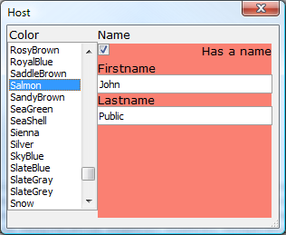

Illustrated Desktop Overview V11
Reporting
An improved Quick Report Genie...
and a new Layout Table report allow the easy generation of reports in HTML and Excel.

This includes the ability to create Linked Reports, which are even more useful than subreports. Here's a report design with the linked report hatched...

and here's the report preview with the linked sections.

Programming
Xbasic is now more powerful. Among other improvements, it has support for the .NET Framework
and a more powerful Class syntax
define class global StoredProc dim protected m_Connection as SQL::Connection dim public read protected write SPKeyword as C = "" ...
that supports data hiding.
Xdialog has been improved, with the biggest changes being the ability to incorporate HTML, Tabbed UIs, and Page Layouts into Xdialog windows to make stunning looking dialogs.

We have integrated Charts and added a Chart API. You can create charts based on .NET Framework charting. You can use integrated charts as a Component that also runs on the desktop, in Reports, and on desktop Forms.

A new Excel API allows you to directly create Excel files from Xbasic.

This facility is utilized by the new Layout Table report to generate Excel reports. The following illustration is a linked HTML report.
Share user interfaces with Web applications
We now give you the ability to use more Web components on the desktop. You can use Tabbed UIs, Page Layouts, maps, charts, the new Dialog component, and several other components in Desktop applications, not just Grid components.GIS
We support Geographic databases in a portable waySELECT id, Code, Name, City, County, State, GeogLatitude(Location) AS Lat, GeogLongitude(Location) AS Lon, Elevation FROM US_Airports
and have added a Google Map component.

You can link a Google Map to a row in a Grid, use it as a Geographic Search control for a Grid,

and display the geographic and other information from many rows of a Grid on a Map Alternate View.

All of this works on the desktop as well as the Web. See Web Components that run on the desktop V11.
Videos
| Number | Category | Description |
| DT1 | Layout Editors - Control Libraries | When you are editing a Layout (e.g. Form, Report, etc.), you can
select one or more controls and then place them in a 'Control Library'
on the Toolbox. Controls in the Control Library can be placed on any
Layout.
This video shows how you can add controls to the Control Library, and then use controls that you previously added to the Control Library.
|
| DT2 | Layout Editors - Embedded Charts | Alpha Five V11 introduces a powerful charting engine. Charts can be
used in Form, Reports, Labels, Letters, Xdialogs, and Web Components.
This video shows how a chart can be embedded into a form.
|
| DT3 | Charts - Xdialog Examples | The charting features in V11 can be used in Xdialogs. The following
video show how you can embed custom charts in your own Xdialogs.
The Xdialogs shown in the above video are all in the sample 'Learning Xdialog' database that ships with V11. Since there are many example scripts in 'Learning Xdialog' that would be useful to have quick access to, regardless of which database you are working in, we show in this video how you can easily create a Code Library from the examples in 'Learning Xdialog'. |
| DT4 | Forms - Embedded Charts - Charting Summary Data | The charts that you embed on a Form or Report can plot summary data.
The charts can either be defined declaratively, or you can use custom
Xbasic.
These videos show how a chart that summarizes attendees at a seminar by state can be defined using the built-in Chart Genie, or using Xbasic. The sample database used in the videos can be be downloaded here.
|